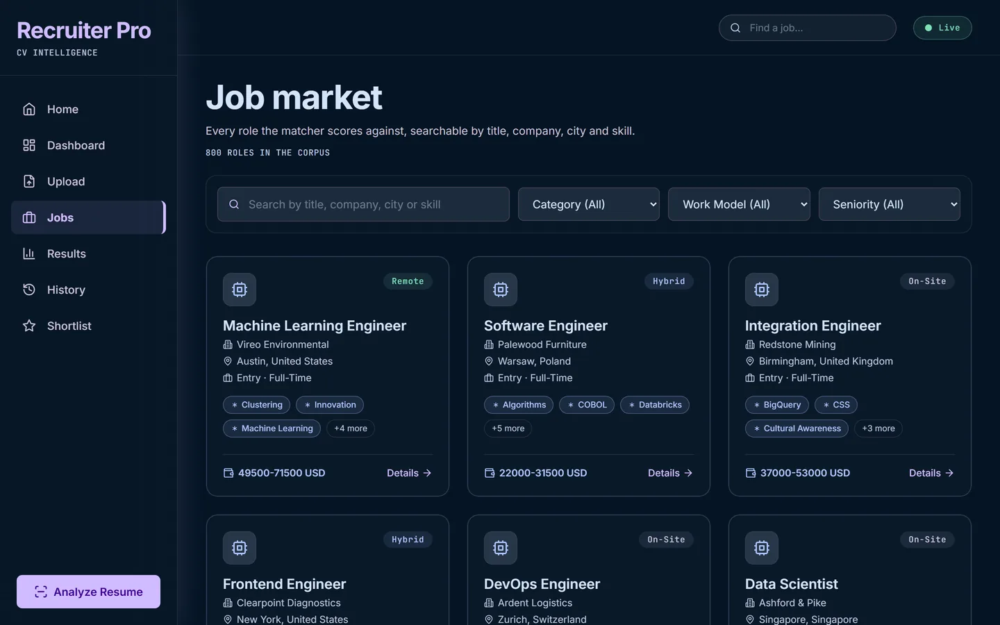
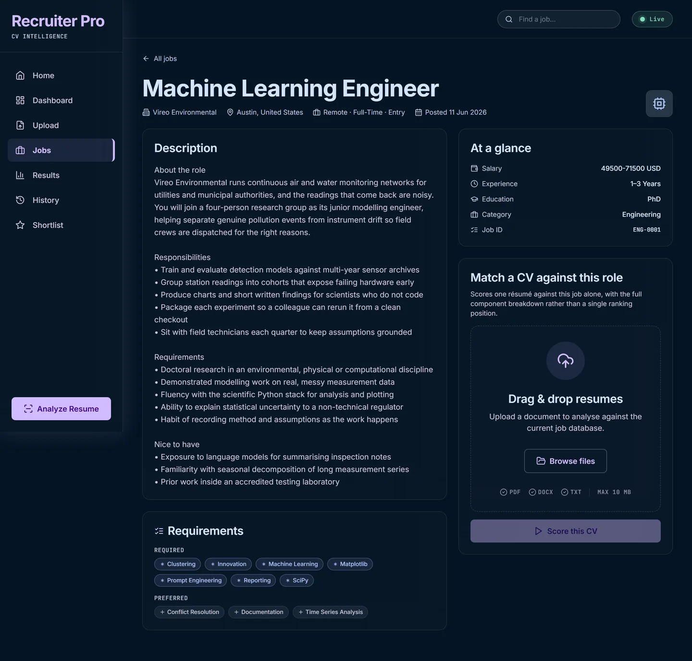
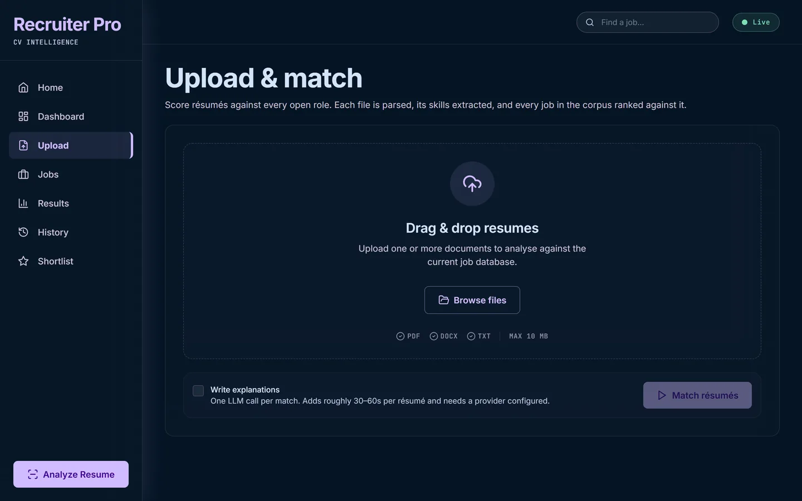
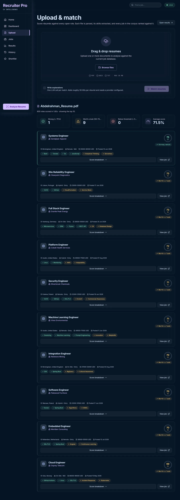
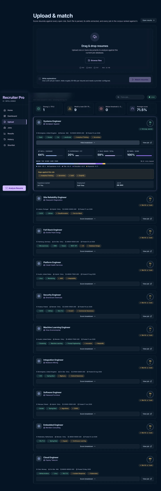
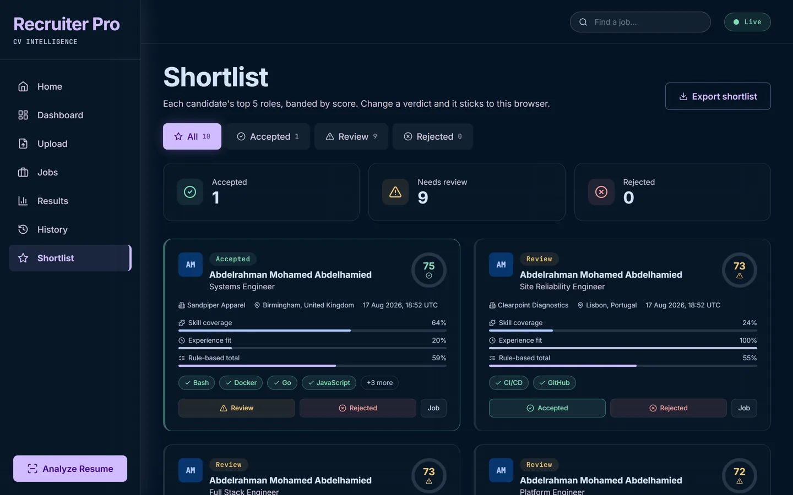
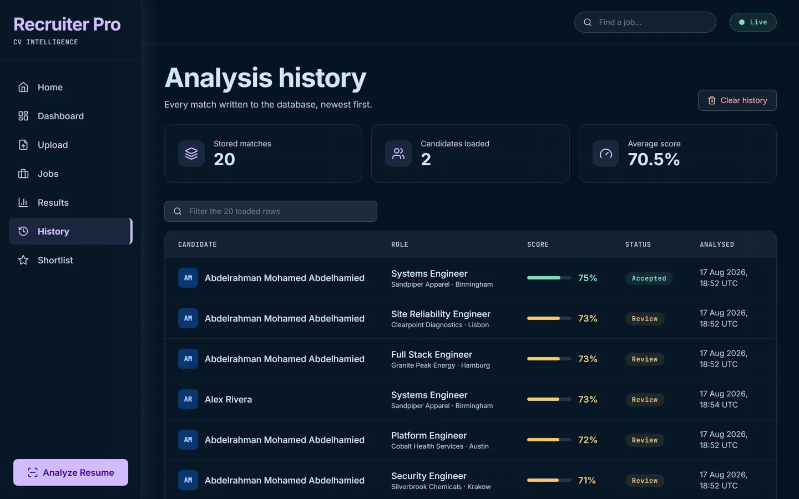
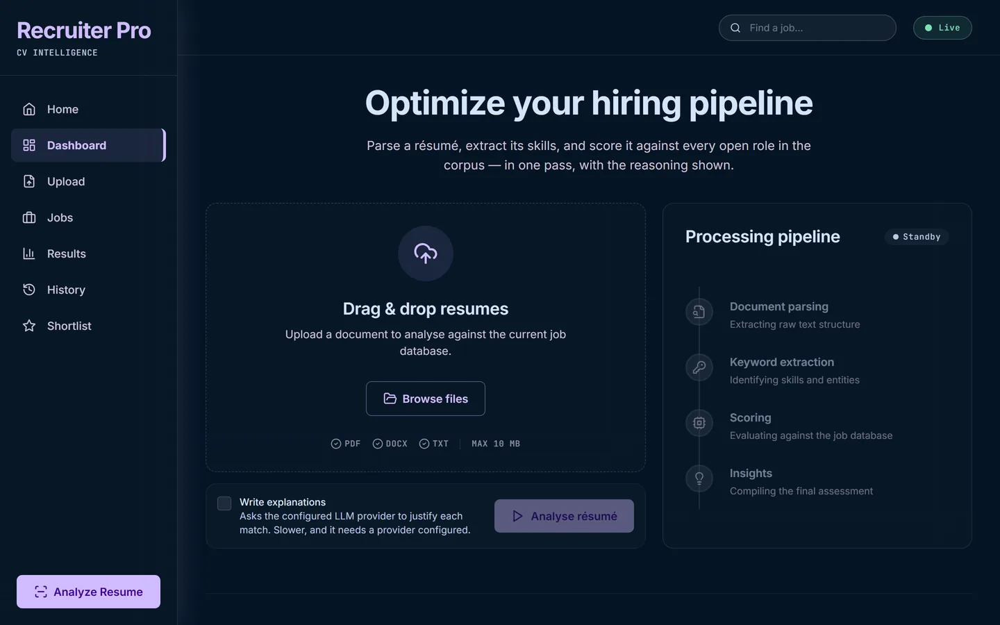
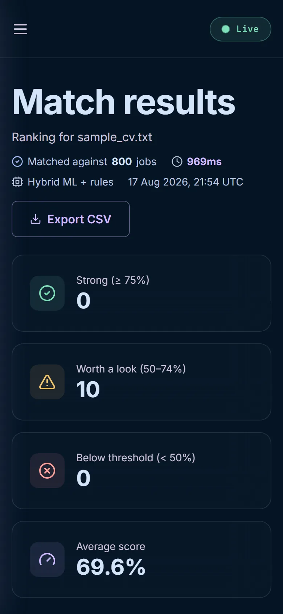

Walkthrough
A real CV, through the real thing.
Every image below is a capture of the running application — the production Next.js build talking to the live FastAPI process, holding the real 800-role corpus and the trained model. Playwright drove the journey; nothing is mocked, stubbed or drawn.
How these were made, so you can discount them properly.
A script drove a headless browser through the application end to end and screenshotted each step. The API was the real one: 800 roles loaded, the joblib model loaded, SQLite behind it.
Two résumés were used. One is the author's own PDF, parsed by the same code path as any upload. The other belongs to "Alex Rivera", who does not exist — a file written for this capture so the shortlist has more than one candidate on it. The corpus itself is a purpose-built 800-record dataset, not scraped listings.
Explanations are switched off in these runs. The "Write explanations" toggle is unchecked, so what you see is scoring only. That path calls a language model and adds roughly 30–60 seconds per résumé, which is a poor fit for a capture script and would not have shown you anything the score breakdown does not.
The address bar in each frame shows the deployed URL. The captures were taken against a local production build of the same commit.
Find out what you are matching against
Before a single CV is uploaded, the corpus has to be inspectable.
Every figure on these pages is served by GET /stats and
GET /jobs, so the interface and the data cannot disagree.
Landing
The counts here are not written into the page. They come from
/stats on load — 800 roles across 27 countries, 60
companies, 654 distinct skills. An earlier version of this page
claimed "3,000+ jobs" against a corpus that had never held that many.
Browse the corpus
Eight categories, three work models, six seniority levels — and the
filter values are read from the corpus itself via
/jobs/facets rather than hardcoded, so a filter can
never offer an option that returns nothing.

Search, done server-side
Typing kubernetes filters across title, company, city
and skill on the server. This search box previously existed and did
nothing: /jobs accepted only skip and
limit, so search=nurse returned a
byte-identical page to no search at all.
One role, in full
The description keeps its four-section structure because the element preserves newlines rather than collapsing them. Required and preferred skills are separated, and a CV can be scored against this one role alone — the same components, without the ranking.

Score one résumé against all 800 roles
One pass over the whole corpus, not a job at a time. Parsing, extraction, five weighted components per role and one vectorised model call for the lot.
Upload
PDF, DOCX and TXT, capped at 10 MB — and the cap stated here is the
one the API enforces. The file's real leading bytes are checked
against its extension before any parser touches it, so a
.exe renamed .pdf is refused rather than
parsed.

Ranked, with the arithmetic shown
A real 161 KB PDF, scored against all 800 roles. The header reports what actually happened — the corpus size and the elapsed time, measured rather than estimated. Top match 75, one strong, nine worth a look, average 71.5%.
Each card carries the matched skills and the missing ones, resolved through the vocabulary rather than by string equality, so "React" and "ReactJS" are the same skill and "Java" and "JavaScript" are not.

Where the number came from
Expanding a match shows each component separately and then the part that matters most: a stacked bar of contributions, each segment the component's score multiplied by its weight. A candidate at 74 because their skills are excellent is a different candidate from one at 74 because everything is mediocre, and four independent meters make you do that arithmetic yourself.

Decide, and keep the decision
Shortlist
Each candidate's strongest five roles, banded by score, with accept and reject decisions that persist. A shortlist is the artefact a recruiter hands to someone else, so this is the view that exports to CSV — the filtered view, because the filter is the shortlisting.
This page had a bug, found while capturing these screenshots. It promised "each candidate's top 5 roles" and delivered top 5 rows. Match history keeps every run, so uploading the same CV twice wrote a second row for the same candidate-and-role pairing, and the board filled with duplicate cards identical except for their timestamps — 278 stored rows collapsed to just 31 distinct pairings.
It now collapses on candidate and job id, keeping the highest-scoring row. Deliberately job id and not job title: two companies both advertising "Systems Engineer" are two roles a recruiter must see separately, and this corpus contains exactly that. The screenshot below is the fixed build.

History
Every match ever run, newest first, written to SQLite in a single transaction per upload rather than a connection per row. Unlike the shortlist this view does not collapse repeats — a second run of the same CV is a real event and belongs in the record.

Dashboard
The aggregate view over what has been scored so far. The sidebar carries a scoring indicator reading hybrid or rules-only, because the model failing to load is otherwise invisible — rule-based scores are just as plausible-looking as hybrid ones.

At 390 pixels
The same results on a phone: navigation becomes a drawer below
lg, and no page scrolls horizontally at 375px. Captured
at a real mobile viewport, not a narrowed desktop one.

Three bugs were found by doing this. Walking the real application for screenshots surfaced the shortlist duplication above; a name-extraction fault that stored a candidate called "Berlin, Germany", because a city in the address blocklist vetoed the line "Alex Rivera"; and a README performance figure measured on a fixture a fifth the density of a real résumé.
Each was reproduced, given a test that failed first, then fixed — and these screenshots were re-captured against the corrected build. The test suite went from 529 to 544 passing.